| 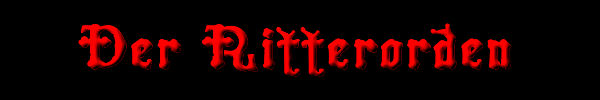 |
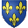 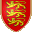 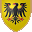
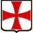 Der TemplerordenGeschichte - Großmeister - Symbole
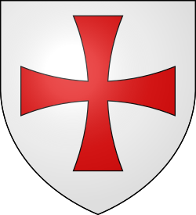Hugo von Payens (1070-1136) Gründer und Großmeister von 1118 bis 1136 Hugo von Payens (bzw. Hugo von Payns oder Hugues de Payns) besitzt kein eigenes Wappen, da die Heraldik erst im XII. Jhdt. aufkommt.
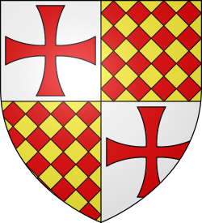Robert der Burgunder (10??-1147) Großmeister von 1136 bis 1147 Robert der Burgunder (bzw. Robert de Craon oder Robertus de Burgundio) ist ein Mitstreiter von Hugo von Payens und einer der neun Gründungsritter des Ordens.
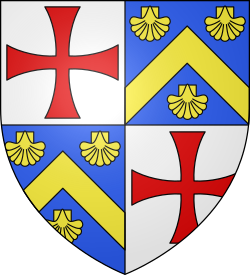Eberhard von Barres (1113-1174) Großmeister von 1147 bis 1151 Eberhard von Barres (bzw. Everard des Barres) verzichtet auf seinen Titel und tritt als einfacher Mönch in den Zisterzienserorden der Abtei von Clairvaux ein.
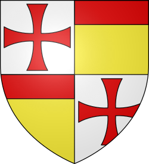Bernhard von Tremelay (10??-1153) Großmeister von 1151 bis 1153 Bernhard von Tremelay (bzw. Bernard de Tremelay oder Bernard de Tromelai) ist vor seiner Ernennung zum Großmeister Präzeptor der Jura-Kommandantur in Temple-lès-Dôle.
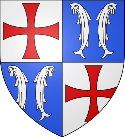Andreas von Montbard (10??-1156) Großmeister von 1154 bis 1156 Andreas von Montbard (bzw. André von Montbard oder André de Montbard) ist der letzte der neun Gründungsmitglieder des Ordens. Er verzichtet aus demselben Grund wie Eberhard von Barres auf seinen Titel.
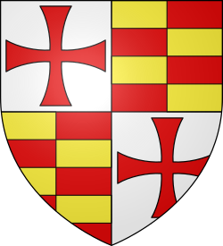Bertrand de Blanchefort (1109-1169) Großmeister von 1156 bis 1169 Bertrand de Blanchefort unternimmt eine tief greifende Reform der Ordensregel (die "Retraits"), die den hierarchischen Umgang genau festlegt.
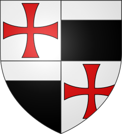Philipp von Milly (1128-1178) Großmeister von 1169 bis 1171 Philipp von Milly (bzw. Philipp von Nablus oder Philippe de Milly/de Naplouse) gelingt die Schaffung einer Vertrauensbasis zwischen dem Orden und Amalrich I., König von Jerusalem.
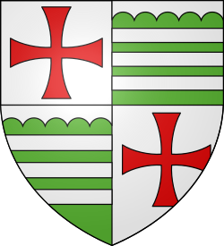Odo von Saint-Amand (11??-1179) Großmeister von 1171 bis 1179 Odo von Saint-Amand (bzw. Odon von Saint-Amand oder Eudes de Saint-Amand) stirbt nach der Schlacht von Mardsch Ayun in den Kerkern des Sultans Saladin in Damaskus.
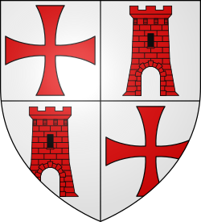Arnaud de Toroge (1110-1184) Großmeister von 1180 bis 1184 Arnaud de Toroge (bzw. Arnaud de Toroga oder Arnaud de la Tour Rouge), ehemals Meister der Provence und von Aragon, macht sich vor allem in Spanien im Zuge der "Reconquista" einen Namen.
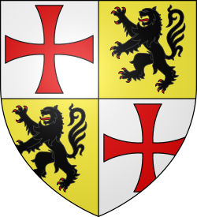Gerhard von Ridefort (1141-1189) Großmeister von 1184 bis 1189 Der Stolz und der in Wahnsinn übergehende Hass des Gerhard von Ridefort (bzw. Gérard de Ridefort) führt zur katastrophalen Niederlage bei den Hörnern von Hattin (30.000 Kreuzfahrer finden den Tod).
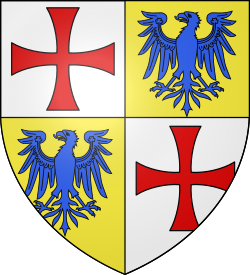Robert von Sablé (11??-1193) Großmeister von 1191 bis 1193 Robert von Sablé (bzw. Robert de Sablé), ein Vasall von Richard Löwenherz, wird zum Großmeister gewählt, nachdem die Ordensführung zwei Jahre lang unbesetzt geblieben war.
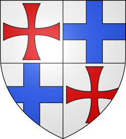Gilbertus Horal (1152-1200) Großmeister von 1193 bis 1200 Während der Amtszeit von Gilbertus Horal (bzw. Gilbert Horal oder Gilbert Erail) nehmen die Auseinandersetzungen zwischen Templern und Hospitalitern ein katastrophales Ausmaß an.
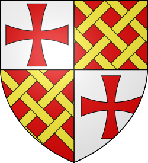Philippe de Plessiez (1165-1209) Großmeister von 1201 bis 1209 Unter der Amtszeit von Philippe de Plessiez (bzw. Philippe du Plessis) erlebt der Orden den Höhepunkt seiner Glanzzeit in Europa.
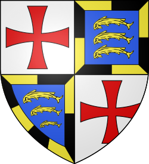Wilhelm von Chartres (11??-1218) Großmeister von 1210 bis 1218 Wilhelm von Chartres (bzw. Guillaume de Chartres) widmet sich vorwiegend der "Reconquista" in Spanien: Großer Einfluss des Templerordens auf der iberischen Halbinsel.
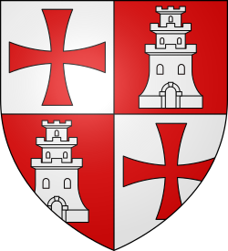Peter von Montaigu (11??-1232) Großmeister von 1218 bis 1232 Peter von Montaigu (bzw. Pierre de Montaigu oder Pedro de Montaigu) zeigt großes diplomatisches Geschick bei der Versöhnung des Königs von Jerusalem, des Papstes und der Hospitaliter.
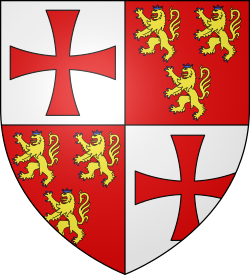Armand von Périgord (1178-1244) Großmeister von 1232 bis 1244 Armand von Périgord (bzw. Hermann von Pierre-Grosse oder Armand de Périgord) stirbt in La Forbie, wo sich Templer, Hospitaliter und Deutschordensritter und der Sultan von Ägypten gegenüber stehen.
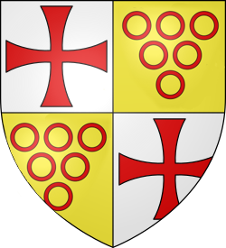Richard von Bures (11??-1247) Großmeister von 1244 bis 1247 Der Name Richards von Bures (bzw. Richard de Bures) stammt von der Ballei Bures-les-Templiers an der Côte d'Or, der Geburtsstätte des Templerordens in Frankreich.
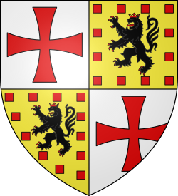Wilhelm von Sonnac (11??-1250) Großmeister von 1247 bis 1250 Wilhelm von Sonnac (bzw. Guillaume de Sonnac), ein kluger und vorsichtiger Mann, lässt die Archive des Ordens kodifizieren und an einen sicheren Ort bringen.
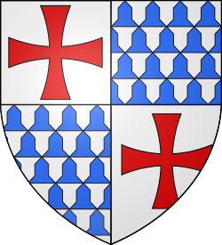Renaud de Vichiers (1198-1252) Großmeister von 1250 bis 1252 Renaud de Vichiers lässt Joinville das Geld des Ordens entwenden, um Ludwig IX. von den Mameluken freizukaufen.
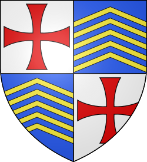Thomas Béraud (12??-1273) Großmeister von 1252 bis 1273 Thomas Béraud ist eine eher geheimnisumwitterte Persönlichkeit, seine Karriere innerhalb des Ordens ist keinem Historiker bekannt.
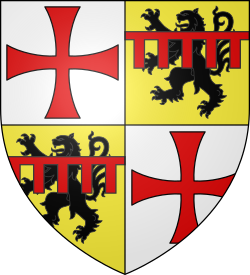Wilhelm von Beaujeu (1233-1291) Großmeister von 1273 bis 1291 Wilhelm von Beaujeu (bzw. Guillaume de Beaujeu) findet trotz einer heroischen Verteidigung beim letzten Ansturm der Muselmanen auf die Stadt Akkon den Tod.
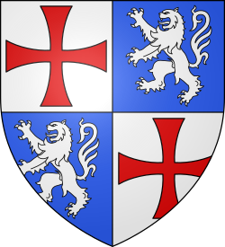Thomas Gaudin (1229-1292) Großmeister von 1291 bis 1292 Thomas Gaudin (bzw. Thibaud Gaudin) stirbt vor Erschöpfung bei dem Versuch, die durch die vorangehenden Kämpfe stark in Mitleidenschaft gezogene Organisation des Ordens wieder aufzubauen.
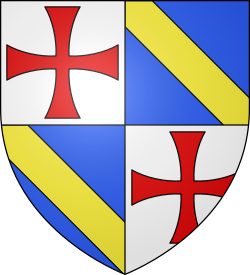Jacob von Molay (1244-1314) Großmeister von 1292 bis 1312 Jacob von Molay (bzw. Jacques de Molay) findet nach 7 Jahren Gefangenschaft in den Händen der Inquisition am 18. März 1314 den Tod auf dem Scheiterhaufen. 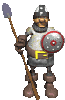 Geschichte - Großmeister - Symbole |